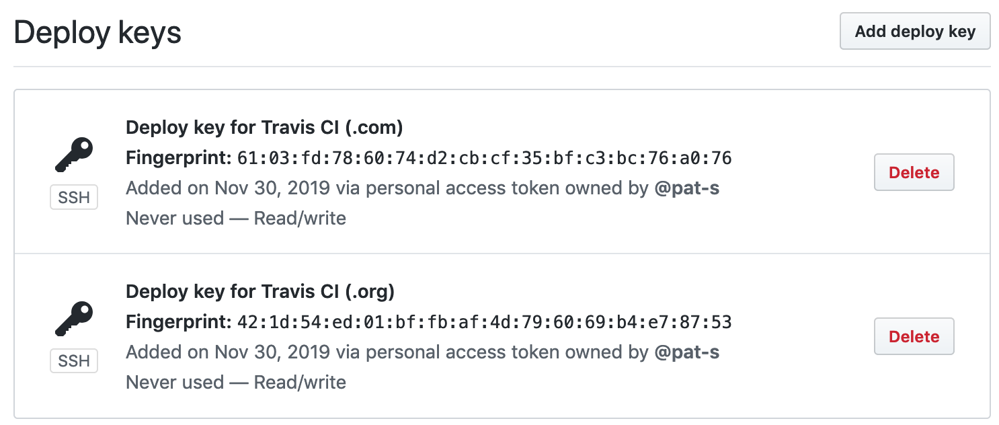

Introduction
{tic} uses the CI client packages {travis} and {circle} for setting up deployment on the CI systems.
Travis CI
-
When calling
travis::use_travis_deploy()(either directly or indirectly by usinguse_tic()), a public key is added to GitHub repository under the “Deploy keys” section and the user receives an e-mail:
-
A private key is encoded in base64 and stored in an environment variable on Travis. During the CI run, {tic} installs it in the
~/.sshdirectory so that it can be used for authentication:
Initiating the deployment via a public-private key pair has the advantage that rights are granted to a single repo only and the setup process can be automated.
Circle CI
On Circle CI, setting up deployment is easier than on Travis as there is no need to create a SSH key pair for deployment.
When calling circle::use_circle_deploy() directly (or indirectly via tic::use_tic()), a so called “user-key” is created and stored in the Circle CI repo. This key makes it possible to deploy from Circle CI builds to your Github repo. No extra deploy key need to be stored in the Github repo.
pkgdown deployment
pkgdown is an R package which builds a documentation wrapper-site of a R package. It collects all the vignettes, function references and metadata information of a package and presents it in an eye-appealing HTML version.
It has become a quasi-standard to provide a {pkgdown} site for an R package. However, it is tedious to update the pkgdown site manually on every commit, check whether something has changed and commit the changes. {tic} comes with the ability to automate this procedure.
The following example shows how {tic} deploys a pkgdown site on Travis CI. In the .travis.yml file the “before_deploy” and “deploy” stages are redirected to {tic}.
before_deploy: R -q -e 'tic::before_deploy()'
deploy:
provider: script
script: R -q -e 'tic::deploy()'In the “before_deploy” stage, {tic} will do the following:
if (ci_on_travis()) {
get_stage("before_deploy") %>%
add_step(step_setup_ssh(name = travis_private_key_name))
}-
Call
step_setup_ssh()if the environment variable"BUILD_PKGDOWN"is set in the Travis build. This step sets up SSH key previously added to the Github and Travis viatravis::use_travis_deploy(). Argumentname = travis_private_key_namecan be ignored as long as no custom private key name was used duringtravis::use_travis_deploy(). If so, then supply it via thetravis_private_key_nameargument indo_pkgdown(). By default,"TRAVIS_DEPLOY_KEY"is used.For backward compatibility, the previous default
"id_rsa"is also supported out of the box. This step is only needed on Travis CI because setting up deployment via SSH keys is somewhat complicated. Call
add_step(step_build_pkgdown())andadd_step(step_push_deploy())in the “deploy” stage.
step_build_pkgdown() will build the {pkgdown} site and afterwards (note the pipe operator chaining the commands), step_push_deploy() takes care pushing the results to the repo. By default the site will be pushed to the gh-pages branch of your repo.
Deploying to docs/ (master) or gh-pages branch
By default the deployment is done to the gh-pages branch. This has the following advantages:
- No cluttering of the commit history in the master branch
- Everything “just works” silently in the background
master branch deployment
Deploying to the docs/ directoy of the master branch has the following advantages:
- Per-branch versions of the pkgdown site (if desi)
- Per-branch versions enable the possibility to have preview for pull requests via https://www.netlify.com/
The disadvantage is that the master branch will be cluttered by automatic commits triggered by Travis that push the changes of the {pkgdown} site to the master branch.
Orphaning the gh-pages branch
By default, changes to the pkgdown site will be added as incremental commits to the gh-pages branch. This is useful to keep a history of past versions and to enable a release and dev version of the site. To have this feature, set
in your _pkgdown.yml file. See ?pkgdown::build_site() for more information.
If you only want to have one version of your pkgdown site and not fill your repo with many commits in the gh-pages branch, you can use do_pkgdown(orphan = TRUE). This will wipe all commits of this branch on every CI run so that there is only one commit corresponding to the latest version of your pkgdown site.
Conditional deployment
If you are running a build matrix or build stages on Travis CI, you want to run certain tasks only once during a build. The creation of a {pkgdown} site is a common task which applies to this.
Another situation in which conditioning comes in handy is when you want to deploy multiple files in different stages. You can restrict on which stage/job a task is executed with the help of environment variables.
{tic} can make use of implicit set environment variables of the build and additional ones added by the user. In the following we show a “build stage” example on Travis CI using the custom env variable "BUILD_PKGDOWN":
.travis.yml:
jobs:
include:
- stage: stage1
env: BUILD_PKGDOWN=TRUE
before_install:
- R -q -e 'install.packages("remotes")'
- R -q -e 'remotes::install_github("ropensci/tic")'
- R -q -e 'tic::prepare_all_stages(); tic::before_install()'
[...]
deploy:
provider: script
script: R -q -e 'tic::deploy()'
on:
all_branches: truetic.R:
Committing single files
The step_push_deploy() function has the ability to restrict the files that are committed and pushed. This can be very useful for conditionally pushing documentation files like NEWS or man/ and NAMESPACE if these are automatically created during the CI run.
In the following example, these files are created/updated by calling devtools::document(). The commit_paths argument in step_push_deploy() decides which files are committed and pushed:
get_stage("before_deploy") %>%
add_step(step_setup_ssh())
get_stage("deploy") %>%
add_code_step(devtools::document(roclets = c("rd", "collate", "namespace"))) %>%
add_step(step_push_deploy(commit_paths = c("NAMESPACE", "man/*")))Applying this idea depends on your overall R package development strategy: Commit files like /man/ and NAMESPACE directly or let them be created during the CI run?